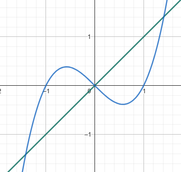
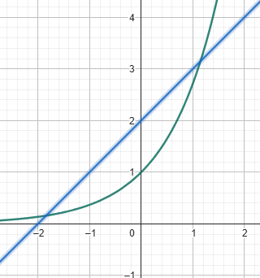

Prova
Questão 1 – Integração por Substituição
(a) \[\int \frac{x^3}{\sqrt{4 - x^2}} \,dx.\]
(b) \[\int \frac{x}{(x^2 + 1)^3} \, dx.\]
Questão 2 – Integração por Partes
(a) \[\int x^2 e^x \, dx.\]
(b) \[\int \ln x \cdot \cos x \, dx.\]
Questão 3 – Cálculo de Área
(a) Área limitada por \( y = x^3 - x \) e \( y = x \).
(b) Área limitada por \( y = e^x \) e \( y = x+2 \).
Questão 4 – Substituição Trigonométrica
(a) \[\int \frac{dx}{x^2 \sqrt{9 - x^2}}.\]
(b) \[\int \frac{x^2}{\sqrt{x^2 - 16}} \,dx.\]